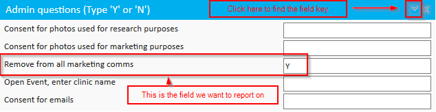
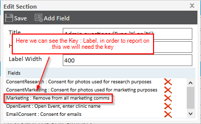
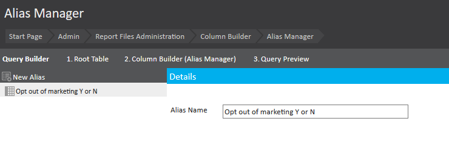
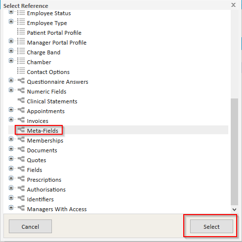
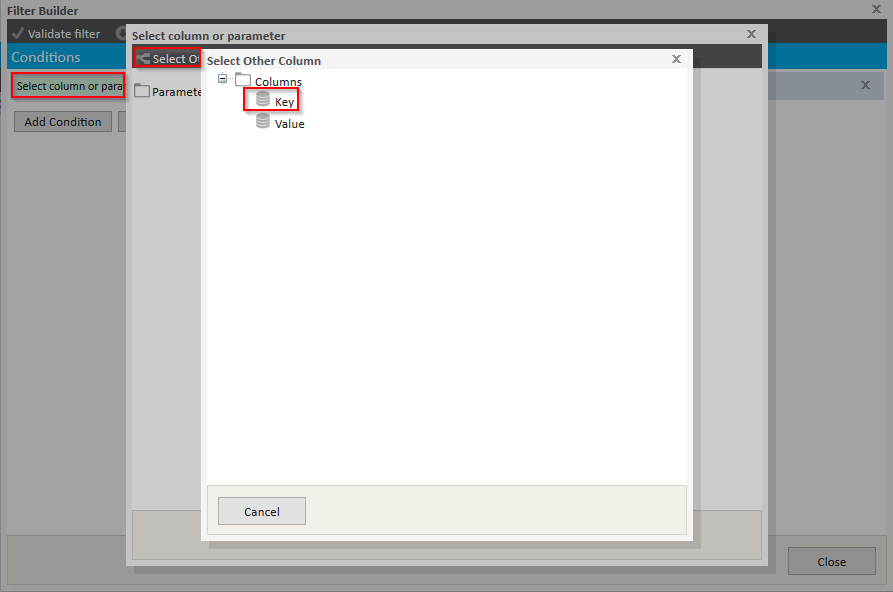
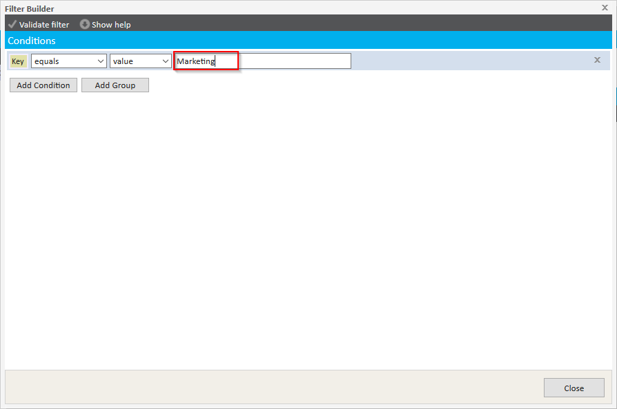
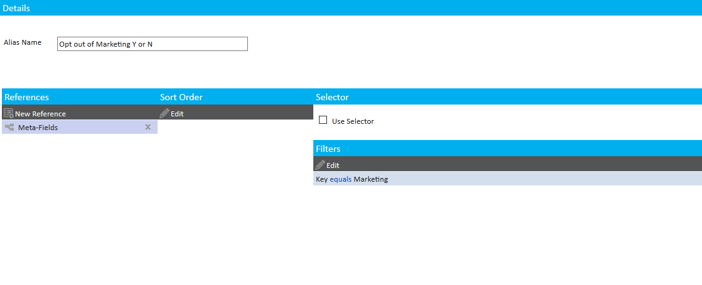
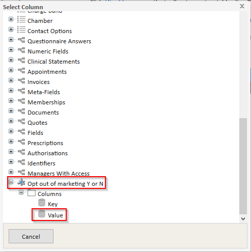
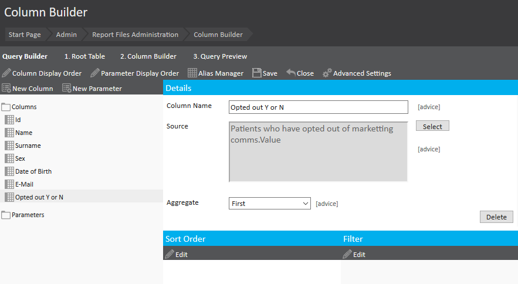

Meddbase allows users to create custom or meta fields on Company, Patient and Medical Person detail pages. These custom fields allow capturing information in free text format that may not have a designated field in the standard Meddbase application. Information captured in these fields can be reported on.
See Creating Custom/Metafields on a Record or Details page for detailed information on adding meta fields.
This article will walk you through the process of reporting on patient meta fields using an alias.
The assumption that you already have a basic understanding of reporting, if you don't - click here before reading this article.
To report on a meta field, you need to use the field's Key. You need to navigate to the page where the meta field has been added (Patient Record, Medical Person Record or Company Record) and follow the steps below:-


Now that you know the Key of the field (Marketing) we can build a report to show the Values captured in the field.
This will be a standard patient demographics report however, we are going to add a column which pulls in the data from the previously highlighted meta field. To start building the report:-





Now we need to add the Value from the Field in our Report. To achieve this, in the Query Builder page:

After selecting that, give the column a name and the report will be ready. The report will look something like the following image.
